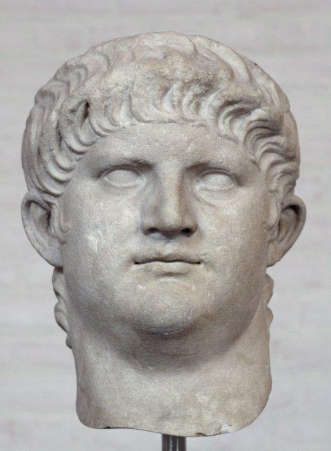

Nero the Second
Le second Néron
From the MSS at Towneley Hall - Poème tiré des Manuscrits de Towneley Hall
Tune - MélodieNo Tune: (Here "Captain Stuart" used as sound background)
Sequenced by Christian Souchon
|
To the text
After he had compared James III with Augustus , the Jacobite Bard could not but parallel the repression after Culloden with Nero's cruel exactions. |
 |
A propos du texte
Après avoir comparé Jacques III à Auguste , le barde Jacobite ne pouvait que rapprocher la répression qui suivit Culloden des exactions de Néon. |

|
Nero the Second
Monstrum Horrendum. [1] 1. As Nero Laughing saw the flames consume, The worlds Metropolis Imperial Rome; So George unpitying greived & Senseless sneered, When England's Capital in flames appeared; [2] 2. Nor is the paralell to them confined, If we compare their guilt of every kind; Nero possessed Britannicus's Crown, George has usurped our royal James's throne; 3. Nero with thundering Edicts first began, To try the terrors of his brutal reign; George by his furious proclamations shews, A Spirit prone to rage, averse to Laws; 4. Nero in masks & revels spent the night, George for the business of the throne unfit, ............................................ In Plays & Balls and Junkets does delight: 5. Nero with Horror of his crimes grew mad, Scar'd by the Ghosts of those whose Blood he shed: George conscious of his murders, gloomy sits, Worn out with spleen & Hippocondriac fits; 6. Not all his feasts can drown his inward care, For murdered Loyalists are present there; Such is our George & such we find his court, Where royal Ideots with their train resort; 7. Where William struts with patriot Blood besmear'd, [3] Where Bullies swarm, & ruffians are preferred; Where Atheists, Turks [4], and Bawds the Throne surround; And a strange monster (Ministry) compound; 8. Oh free Born Britons, since a Tyrant reigns, Assert your Liberty, shake off your Chains; Let us in justice rival antient Rome, Let Nero's' vices meet with Nero's doom, And then call James your King from Exile home. Source: "English Jacobite Ballads, Songs and Satires from the MSS at Towneley Hall, Lancashire, edited by the Rev. Alexander B. Grosart, in 1877. |
Le second Néron
Le monstre qui inspire l'horreur. [1] 1. Jadis Néron riait regardant l'incendie Consumer Rome, la capitale du monde. C'est Georges aujourd'hui qui rit d'un rire impie; Et la ville qui brûle devant lui, c'est Londres. [2] 2. Le parallèle, hélas, ne s'arrête point là, Ni les rivalités entre ces deux monarques. Britannicus fut tué pour que Néron régnât. Georges siège aujourd'hui sur le trône de Jacques. 3. Par des édits sanglants, Néron inaugurait Cette ère de terreur que fut son brutal règne. Georges tient des discours dignes d'un forcené: Son mépris de la loi, sa fureur sont les mêmes. 4. En orgies et banquets Néron passait ses nuits. Georges que les affaires du trône indiffèrent Aux spectacles et bals se complait-il aussi, Aux banquets? Rien ne peut d'avantage lui plaire! 5. L'horreur des ses forfaits a rendu Néron fou, Epouvanté par les spectres de ses victimes. Georges, conscient de ses torts, affiche partout, L'air sombre de celui que l'hypocondrie mine. 6. Les fêtes ne sauraient abolir ses soucis, Quand tant de loyalistes morts y participent Sa cour est à l'image de ce roi maudit, Où des idiots royaux vont exhiber leurs fripes. 7. Y plastronne Guillot, les mains rougies de sang, [3] Et l'on préfère y voir des brutes et des rustres, Des athées, des paillards, des Turcs [4]; et dans leurs rangs Le monstre choisira ses étranges ministres. 8. Britannique né libre, abhorre ce tyran! Clame ta liberté, brise toutes tes chaînes! Les Romains de jadis l'ont fait: fais-en autant! S'il imite Néron, que son sort soit le même! Et que Jacques, le Roi, de son exil revienne! (Trad. Christian Souchon (c) 2011) |
|
[1]
Monstrum horrendum
: In full:—" Monstrum
horrendum, informe, ingens, cui lumen ademptum" (Aeneidi
B. III., 1. 658).
[2] "So George when England's Capital in flames appeared." : This "Fire" is unhistorical,— evidently maliciously magnified. [3] "Where William struts with patriotic Blood besmear'd": Again the Duke of Cumberland. [4] "Turks" : seems to have been used as synonymous with the vilest of the vile, not "natives of Turkey" [see however The Turnip , note 6]. The notes above are copied from A.B. Grosart's notes to "Towneley MSS. |
[1]
Monstrum horrendum
: La citation complète est:—" Monstrum
horrendum, informe, ingens, cui lumen ademptum" (Enéide,
Livre III, 1. 658: Monstre rempli d'effroi tapi dans les ténèbres).
[2] "Et la ville qui brûle devant lui, c'est Londres" : Cet "incendie" n'appartient pas à l'histoire,— une exagération pleine de malignité. [3] "Y plastronne Guillot, les mains rougies de sang": Le duc de Cumberland, encore lui. [4] "Turcs" : semble être ici synonyme de ce qu'il y a de plus vil et non "originaire de Turquie" [voir cependant Le Navet , note 6]. Les notes ci-dessus sont reprises de A.B. Grosart, notes annexées au "manuscrit de Towneley Hall". |
|
|
|